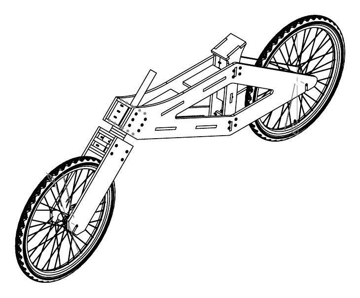
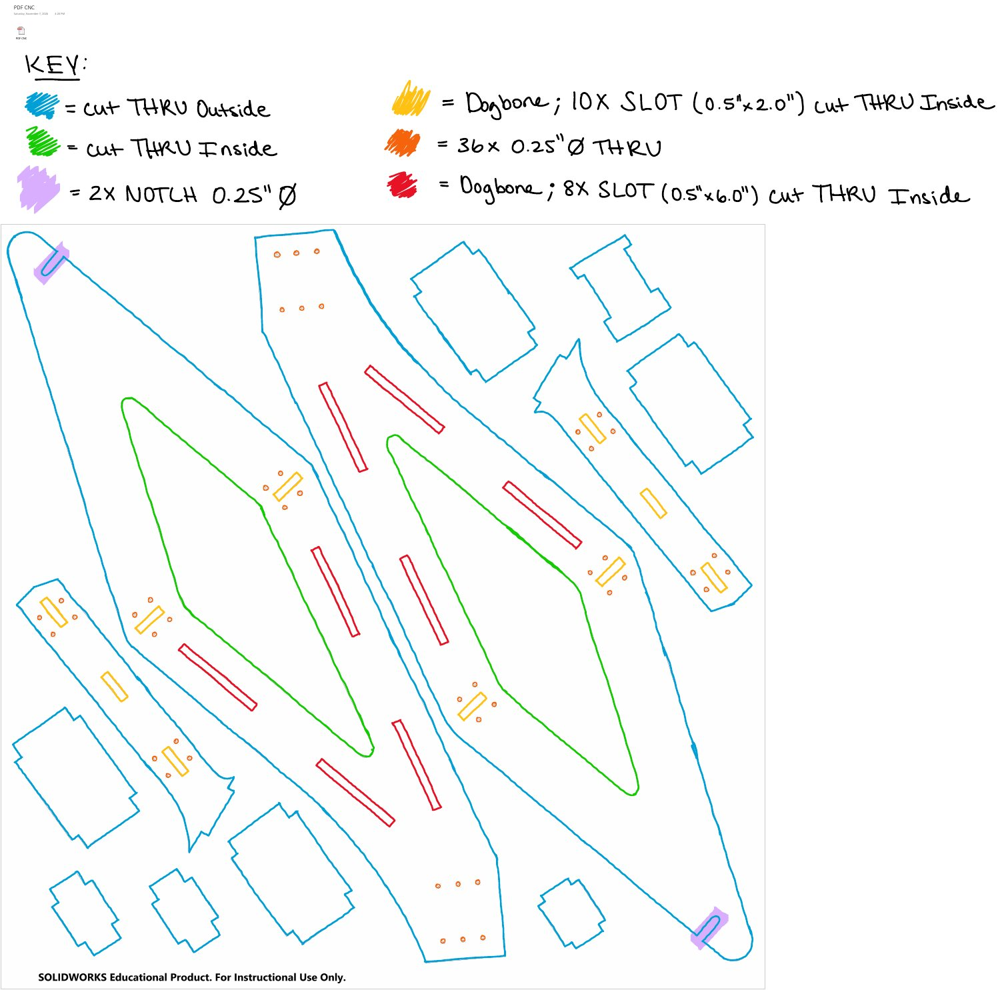
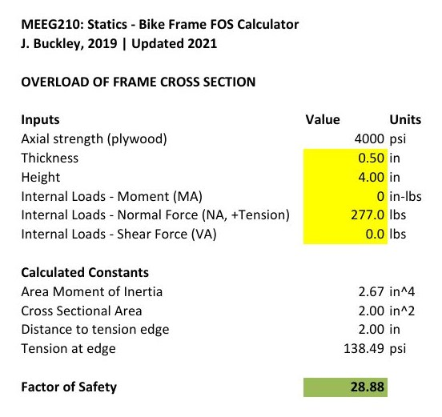

Statics Bike Project

Overview
For our statics semester project, my team of 4 is designing and building a bicycle from 1/2 inch plywood. We also perform a static analysis of the frame to estimate how much weight it can support. I am the team's Student Point of Contact (SPOC). This page covers the design and analysis phase.
Design
The bike has a plywood frame, seat, and fork, with PVC pipe for the stem and standard 26 inch bike wheels. The paper design is an 8-sheet dimensioned drawing set covering the assembly, an exploded view, and each plywood part: seat slab, seat frames, frame connectors, main frames, and seat fillers. The parts have 1/4 inch holes and slotted joints for assembly.
- Front fork sub-assembly, stem (PVC pipe), bearing disks, and headset
- Two main frames and four frame connectors
- Seat slab, two seat support frames, and seat fillers
- Two 26 inch wheels with tires
Fabrication layout
The plywood parts are laid out on a single sheet for CNC cutting. The key marks outside cuts, inside cuts, dogbone slots (10 slots of 0.5 x 2.0 inches and 8 slots of 0.5 x 6.0 inches), 36 holes of 0.25 inch diameter, and two 0.25 inch notches.

Static analysis
We modeled a rider as a 200 lb force at the seat on a wheelbase of 58.25 inches. A rigid body analysis gives the wheel reactions, and then the frame is treated as a truss with 26 inch members and angles of 45, 24.8, 77.6, and 110.2 degrees. Using the method of joints and cutting the frame at sections A and B, we calculated the normal force, shear force, and moment at each section.
| Result | Value |
|---|---|
| Front wheel reaction (A) | 72.1 lb |
| Rear wheel reaction (B) | 127.9 lb |
| Member AD | 101.97 lb (compression) |
| Member DE | 171.89 lb (tension) |
| Member DC | 228.14 lb (compression) |
| Section A: normal / shear / moment | 277 lb tension / 0 lb / 0 |
| Section B: normal / shear / moment | 171.89 lb / 0.005 lb / 0.0065 lb-in |
Factor of safety
Using the course calculator, we checked the 0.5 x 4.0 inch plywood cross section (area 2.00 in2, axial strength 4000 psi) at both sections. The lowest factor of safety is at section A.
| Section | Tension at edge | Factor of safety |
|---|---|---|
| A | 138.49 psi | 28.88 |
| B | 85.95 psi | 46.54 |

Hand calculations
Click any page to enlarge it.